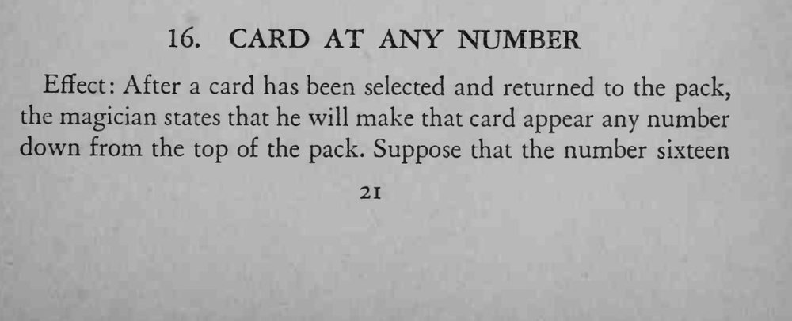
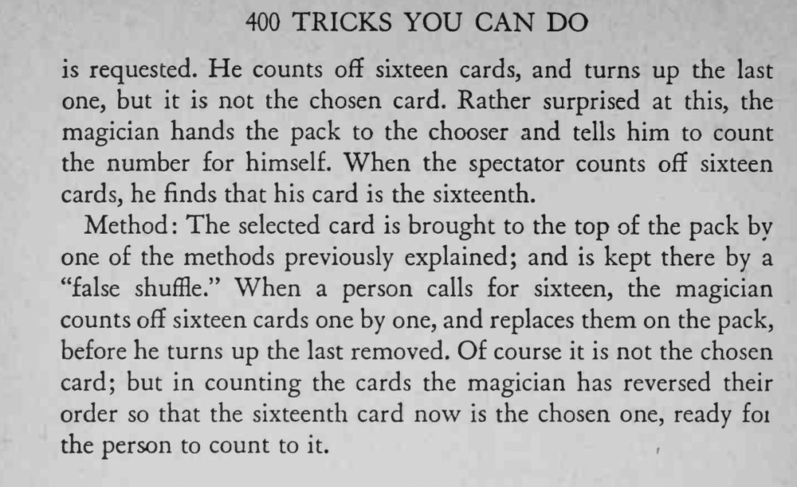

观众说选牌会出现在第 16 张的位置，魔术师数到 16 却不是；观众自己再数一遍，第 16 张正是那张选牌。
数牌和翻牌要连成一气，别让观众察觉牌序被动过。


Effect After a card has been selected and returned to the pack, the magician states that he will make that card appear any number down from the top of the pack. Suppose that the number sixteen is requested. He counts off sixteen cards, and turns up the last one, but it is not the chosen card. Rather surprised at this, the magician hands the pack to the chooser and tells him to count the number for himself. When the spectator counts off sixteen cards, he finds that his card is the sixteenth. Method The selected card is brought to the top of the pack by one of the methods previously explained; and is kept there by a "false shuffle." When a person calls for sixteen, the magician counts off sixteen cards one by one, and replaces them on the pack, before he turns up the last removed. Of course it is not the chosen card; but in counting the cards the magician has reversed their order so that the sixteenth card now is the chosen one, ready foi the person to count to it.